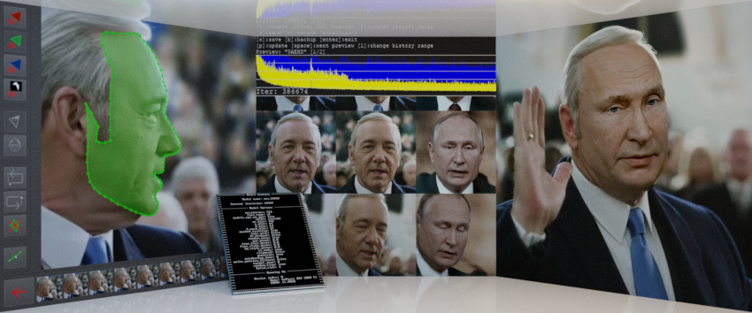
DeepFaceLab 2.0 Guide/Tutorial
NOTE: This thread is just a guide!
[/url]General discussion and DFL 2.0 support thread: https://mrdeepfakes.com/forums/thread-deepfacelab-2-0-discussion-tips-suggestions
*DISCLAIMER: If you're planning on making your own guide based on mine please credit it by including link to it, donations are also welcome to support the work of maintaining and creating future guides for DFL and other deepfake related software.
What is DeepFaceLab 2.0?
DeepFaceLab 2.0 is a tool/app utilizing machine learning to swap faces in videos.
What's the difference between 1.0 and 2.0? What's new in DFL 2.0?
At the core DFL 2.0 is very similar to 1.0 but it was rewritten and optimized to run much faster and offer better quality.
AMD cards are no longer supported and new models (based on SAE/SAEHD and Quick96) are incompatible with previous versions.
However datasets that have been extracted with later versions of DFL 1.0 can be still used in 2.0.
However datasets that have been extracted with later versions of DFL 1.0 can be still used in 2.0.
SAEHD DFL 2.0 Spreadsheet for sharing model settings: https://mrdeepfakes.com/forums/thread-dfl-2-0-user-model-settings-spreadsheet
DFL 2.0 trained and pretrained models sharing thread: https://mrdeepfakes.com/forums/thread-df...d-requests
Official DFL paper: https://arxiv.org/pdf/2005.05535.pdf
List of main features and changes in 2.0:
- 2 models: SAEHD and Quick 96.
- Support for multi-GPU configurations.
- Increased performance during faceset (dataset) extraction, training and merging thanks to better optimization (compared to DFL 1.0)
- Faceset enhancer - for enhancing detail of source dataset and upscaling merger output.
- GAN training - uses Generative Adversarial Network to enhance fine details of the face.
- TrueFace - (for DF architectures) - makes result face more src like.
- Ability to choose which GPU to use for each step (extraction, training, merging).
- Merging process now also outputs mask images for post process work in external video editing software.
- Face landmark/position data embedded within dataset/faceset image files with option to extract embedded info for dataset modifications.
- Training preview window.
- Interactive merger.
- Debug (face landmark preview) option for source and destination (data_src/dst) datasets.
- Faceset (dataset) extraction with S3FD and manual extraction.
- Training at any resolution in increments of 16. Possibility of training models at resolutions up to 640x640.
- Multiple architectures (DF, LIAE, -U, -D and -UD variants)
- XSeg masking model with dataset editor for marking faces (creating masks for model training)
DeepFaceLab 2.0 is compatible with NVIDIA GPUs and CPUs, no AMD support, if you want to train on AMD GPUs - DFL 1.0 can do it but it's no longer supported/updated.
DFL 2.0 requires Nvidia GPU with support of CUDA Compute Compability 3.0
CUDA Compute Capability list: Supported NVIDIA GPUs
DOWNLOAD AND OTHER USEFUL LINKS:
GitHub page (contains newest version as well as all current updates): GITHUB
Stable releases can be found here: DOWNLOAD FROM MEGA
If you don't have an NVIDIA GPU and your CPU doesn't let you train in any reasonable time or you don't want to use DFL 1.0 with your AMD GPU consider using Google Colab: https://mrdeepfakes.com/forums/thread-gu...b-tutorial
DFDNet - Free to use upscaling tool that produces great results especially with highly blurry faces, perfect for fixing low resolution SRC datasets. Colab implementation:
Explanation of all DFL functions:
DeepFaceLab 2.0 consists of selection of .bat files used to extract, train and merge (previously called convert) which are 3 main steps of creating a deepfake, they are located in the main folder along with two subfolders:
- _internal (that's where all the files necessary for DFLs to work are)
- workspace (this is where your models, videos, facesets (datasets) and final video outputs are
Faceset (dataset) - is a set of images that have been extracted (or aligned) from frames (extracted from video) or photos.
There are two datasets being used in DFL 2.0 and they are data_dst and data_src:
- "data_dst" is a folder that holds frames extracted from data_dst.mp4 file - that's the target video onto which we swap faces. It also contains 2 folders that are created after running face extraction from extracted frames:
"aligned" containing images of faces (with embedded facial landmarks data)
"aligned_debug" which contains original frames with landmarks overlaid on faces which is used to identify correctly/incorrectly aligned faces (and it doesn't take a part in training or merging process).
After cleaning up dataset (of false positives, incorrectly aligned faces and fixing them) it can be deleted to save space.
- "data_src" is a folder that holds frames extracted from data_src.mp4 file (that can be interview, movie, trailer, etc) or where you can place images of your source - basically the person whose face you want to swap on target video. As with data_dst extraction, after extracting faces from frames/pictures 2 folders are created:
"aligned" containing images of faces (with embedded facial landmarks data)
"aligned_debug" this folder by default is empty and doesn't contain any preview frames with landmarks like during extraction of data_dst, if you want these - you need to select yes (y) when starting extraction to confirm you want these generated to check if all faces are correctly extracted and aligned.
Before you get to extract faces however you must have something to extract them from:
- for data_dst you should prepare the target (destination) video and name it data_dst.mp4
- for data_src you should either prepare the source video (as in examples above) and name it data_src.mp4 or prepare images in jpg or png format.
The process of extracting frames from video is also called extraction so for the rest of the guide/tutorial I'll be referring to both processes as "face extraction" and "frame extraction".
As mentioned at the beginning all of that data is stored in the "workspace" folder, that's where both data_src/dst.mp4 files, both "data_src/dst" folders are (with extracted frames and "aligned"/"aligned_debug" folders for extracted/aligned faces) and the "model" folder where model files are stored.
Options are grouped based on the function they do.
1. Workspace cleanup/deletion:
1) Clear Workspace - self explanatory, it deletes all data from the "workspace" folder, feel free to delete this .bat file to prevent accidental removal of important files you will be storing in the "workspace" folder
2. Frames extraction from source video (data_src.mp4):
2) Extract images from video data_src - extracts frames from data_src.mp4 video file and puts them into automatically created "data_src" folder, available options:
- FPS - skip for videos default frame rate, enter numerical value for other frame rate (for example entering 5 will only render the video as it was 5 frames per second, meaning less frames will be extracted)
- JPG/PNG - choose the format of extracted frames, jpgs are smaller and generally have good enough quality so they are recommended, pngs are large and don't offer significantly higher quality but they are an option.
3. Video cutting (optional):
3) cut video (drop video on me) - allows to quickly cut any video to desired length by dropping it onto that .bat file. Useful if you don't have video editing software and want to quickly cut the video, options:
From time - start of the video
End time - end of the video
Audio track - leave at default
Bitrate - let's you change bitrate (quality) of the video - also best to leave at default
3. Frames extraction from destination video (data_dst.mp4):
3) extract images from video data_dst FULL FPS - extracts frames from data_dst.mp4 video file and puts them into automatically created "data_dst" folder, available options:
- JPG/PNG - same as in 2).
4. Data_src faces extraction/alignment:
First stage of preparing source dataset is to align the landmarks and produce 512x512 face images from the extracted frames located inside "data_src" folder.
There are 2 options:
4) data_src faceset extract MANUAL - manual extraction
4) data_src faceset extract - automated extraction using S3FD algorithm
Available options for both S3FD and MANUAL extractor are:
- choosing coverage area of extraction depending on face type of the model you want to train:
a) full face (for half, mid-half and full face)
b) whole face (for whole face but also works with others)
c) head (for head type of model)
- choosing which gpu (or cpu) to use for faces extraction/alignment process.
- choosing whether to generate "aligned_debug" folder or not.
4. Data_src cleanup:
After that is finished next step is to clean the source faceset/dataset of false positives/incorrectly aligned faces, for a detailed info check this thread: https://mrdeepfakes.com/forums/thread-gu...y-facesets
4.1) data_src view aligned result - opens up external app that allows to quickly go through the contents of "data_src/aligned" folder for false positives and incorrectly aligned source faces as well as faces of other people so you can delete them.
4.2) data_src sort - contains various sorting algorithms to help you find unwanted faces, these are the available options:
[0] blur
[1] face yaw direction
[2] face pitch direction
[3] face rect size in source image
[4] histogram similarity
[5] histogram dissimilarity
[6] brightness
[7] hue
[8] amount of black pixels
[9] original filename
[10] one face in image
[11] absolute pixel difference
[12] best faces
[13] best faces faster
4.2) data_src util add landmarks debug images - let's you generate "aligned_debug" folder after extracting faces (if you wanted to have it but forgot or didn't select the right option in the first place.
4.2) data_src util faceset enhance - uses special machine learning algorithm to upscale/enhance the look of faces in your dataset, useful if your dataset is a bit blurry or you want to make a sharp one have even more detail/texture.
Optionally for enhancing SRC sets (not recommended for DST) you can use DFDNet - Colab link here:
https://colab.research.google.com/github...7-E-vRSYar
4.2) data_src util faceset metadata restore and 4.2) data_src util faceset metadata save - let's you save and later restore embedded alignment data from your source faceset/dataset so you can edit some face images after you extracted them (for example sharpen them, edit out glasses, skin blemishes, color correct) without loosing alignment data and also so you don't need to re-extract them again.
EDITING ANY IMAGES FROM "ALIGNED" FOLDER WITHOUT THIS STEP WILL REMOVE THAT ALIGNMENT DATA AND THOSE PICTURES WON'T BE USABLE IN TRAINING, WHEN EDITING KEEP THE NAMES THE SAME, NO FLIPPING/ROTATION IS ALLOWED, ONLY SIMPLE EDITS LIKE COLOR CORRECTION, ETC.
4.2) data_src util faceset pack and 4.2) data_src util faceset unpack - packs/unpacks all faces from "aligned" folder into/from one file. Used mainly for preparing custom pretraining dataset or for easier sharing as one file.
4.2.other) data_src util recover original filename - reverts names of face images back to original order/filename (after sorting). Optional, training and merging will run correctly regardless of the SRC faces file names.
5. Data_dst preparation:
Here steps are pretty much the same as with source dataset, with few exceptions, let's start with faces extraction/alignment process.
We still have Manual and S3FD extraction method but there is also one that combines both and a special manual extraction mode, "aligned_debug" folder is generated always.
5) data_dst faceset extract MANUAL RE-EXTRACT DELETED ALIGNED_DEBUG - manually extraction from frames deleted from "aligned_debug" folder. More on that in next step - Data_dst cleanup.
5) data_dst faceset extract MANUAL - manual extraction.
5) data_dst faceset extract + manual fix - automated extraction + manual one for frames where algorithm couldn't properly detect faces.
5) data_dst faceset extract - automated extraction using S3FD algorithm.
Available options for all extractor modes are:
- choosing coverage area of extraction depending on face type of the model you want to train:
a) full face (for half, mid-half and full face)
b) whole face (for whole face but also works with others)
c) head (for head type of model)
- choosing which GPU (or CPU) to use for faces extraction/alignment process.
5. Data_dst cleanup:
After we aligned data_dst faces we have to clean them up, similar to how we did it with source faceset/dataset we have a selection of sorting methods which I'm not going to explain as they work exactly the same as ones for src.
However cleaning up the destination dataset is different than source because we want to have all the faces aligned for all the frames where they are present - including obstructed ones which we can mark in the XSeg editor and then train our XSeg model which will mask them out - effectively making obstructions clearly visible over the learned faces, more on that in the XSeg stage below. There are couple of tools at our disposal for that:
5.1) data_dst view aligned results - let's you view the contents of "aligned" folder using external app (built into DFL) which offers quicker thumbnail generation than default windows explorer
5.1) data_dst view aligned_debug results - let's you quickly browse contents of "aligned_debug" folder to locate and delete any frames where our target person face has incorrectly aligned landmarks or where landmarks weren't placed at all (which means face wasn't detected at all). In general you use this to find if all your faces are properly extracted and aligned (if landmarks on some frames aren't lining up with the shape of the face or eyes/nose/mouth/eyebrows or are missing - they should be deleted so we can later manually re-extract/align them).
5.2) data_dst sort - same as with source faceset/dataset, this tool let's you sort all aligned faces within "data_dst/aligned" folder so that's it's easier to locate incorrectly aligned faces, false positives and faces of other people we don't want to train our model on/swap faces onto.
5.2) data_dst util faceset pack and 5.2) data_dst util faceset unpack - same as with source, let's you quickly pack entire dataset into one file.
5.2) data_dst util recover original filename - same as with source, restores original names/order of all aligned faces after sorting.
Now that you know your tools here is an example of my technique/workflow for cleaning up the data_dst dataset that guarantees 100% of faces extraction.
1. Start by sorting data_dst using 5.2) data_dst sort and select sorting by histogram, this will generally sort faces by their similarity in color/structure so it's likely to group similar ones together and separate any images that may contain rotated/zoomed in/out faces, as well as false positives and faces of other people.
2. Delete all false positives, incorrectly aligned (rotated) and unwanted faces.
3. Revert the filenames/order to original one using 5.2) data_dst util recover original filename.
4. Go into the folder "data_dst/aligned" and use the following powershell command to remove _0 suffixes from filenames of aligned data_dst faces.
Quote:- hold shift while right clicking, open powershell and use this command:5. If your scene has crossfade transitions or mirrors, search for _1 files that may contain additional faces but also duplicates, move them to separate folder, run script again ("_1","")}, copy back to main folder and make sure to keep all files but not the same ones (so select just one to keep if it's the same face or both if they are different faces of the same person from the same frame).
get-childitem *.jpg | foreach {rename-item $_ $_.name.replace("_0","")}
- wait for the folder address to be displayed again, indicating completion of the process and close the window
6. Create a copy of the "aligned_debug" folder.
7. Once done, select all files from "aligned" and copy them (don't move them) to the "aligned_debug - copy" folder, hit replace, wait for it to finish and while all replaced files are still highlighted/selected delete them.
8. Go through remaining frames and remove all that don't contain any faces you want to manually extract.
9. Copy the rest back to the original "aligned_debug" folder, hit replace, wait for it to finish and while all replaced files are still highlight/selected delete them.
10. Now your "aligned_debug" folder contains only frames from which faces were correctly extracted and all frames from which extractor failed to correctly extract faces or did not extract them are gone which means you can run 5) data_dst faceset MANUAL RE-EXTRACT DELETED ALIGNED_DEBUG to manually extract them. Before you do that you might want to run 5.1) data_dst view aligned_debug results to quickly scroll through the remaining "good" ones and see if landmarks look correct on all of them, if you spot some less ideal looking landmarks, feel free to delete them so you can extract them manually too.
Now you are done cleaning up your data_dst and all faces are extracted correctly.
More tips, workflows, bug fixes and frequent issues are explained in the FAQ (4th post in this thread, scroll down to find it).
And in this thread there are some details on how to create source datasets, what to keep, what to delete and also in general how to clean source dataset (pretty much the same was as target/destination dataset) and how/where to share them with other users: https://mrdeepfakes.com/forums/thread-gu...y-facesets
5.1: XSeg model training and faceset marking.
With XSeg model you can train your own mask segmentator of dst(and src) faces that will be used during merging to mask result faces and mask out obstructions as well as specify face and background area for style powers to work with whole face and head face type models.
There is no pretrained XSeg model (unlike the outdated FANseg model) so you need to create your own that will control how the result face is masked over your DST/target video during merging. XSeg is designed to let you create masks that best suit your datasets.
Such models can be also reused so when you start working on a new video you don't need to train the model from scratch but instead reuse existing one and instead feed it new marked faces. Both src and dst facesets/datasets can be marked thus giving you options of using XSeg-prd (src) and XSeg-dst and also combine them both and even combine both with learned mask, just like FANSeg (FAN-dst, FAN-prd, FAN-dst+prd, FAN-dst+prd+learned).
XSeg works with all face types such as full_face, whole_face and even head so you have full control of the face coverage and can also include/exclude hair and obstructions.
Workflow is fairly straightforward, it's the best solution for obtaining good quality masks without the need of using video editing software and creating masks manually via means of rotoscoping using software like Mocha Pro or built-in solutions in various video editing software.
New available .bat files/scripts are:
5.XSeg) data_dst mask for XSeg trainer - edit - label tool to define masked areas of the destination faces with XSeg polygons.
5.XSeg) data_dst mask for XSeg trainer - fetch - copies faces containing XSeg polygons to folder "aligned_xseg". Can be used to collect labeled faces so they can be reused in future XSeg model training.
5.XSeg) data_dst mask for XSeg trainer - remove - removes labeled XSeg polygons from the extracted frames.
5.XSeg) data_src mask for XSeg trainer - edit - label tool to define masked areas of the source faces with XSeg polygons.
5.XSeg) data_src mask for XSeg trainer - fetch - copies faces containing XSeg polygons to folder "aligned_xseg". Can be used to collect labeled faces so they can be reused in future XSeg model training.
5.XSeg) data_src mask for XSeg trainer - remove - removes labeled XSeg polygons from the extracted frames.
XSeg) train.bat - runs the training of the XSeg model.
5.XSeg.optional) trained mask for data_dst - apply - replaces default full_face mask derived from landmarks created during extraction with one from trained XSeg model, recommended for WF training, required for HEAD and if you plan on using face/background style power.
5.XSeg.optional) trained mask for data_dst - remove - restores default full_face masks.
5.XSeg.optional) trained mask for data_src - apply - replaces default full_face mask derived from landmarks created during extraction with one from trained XSeg model, recommended for WF training, required for HEAD and if you plan on using face/background style power.
5.XSeg.optional) trained mask for data_src - remove - restores default full_face masks.
Usage:
1. Train your model - self explanatory. Nothing changes about this stage, just run your model of any face_type you want to use. The exception being using style powers with whole face or head face type models - basically if you want to be able to use this feature during training of the face swapping model (Quick 96, SAEHD) you need to train your XSeg model first and then apply trained masks (SRC and DST) to both datasets, otherwise this feature will not work, reason for this is that in order for it to work it must know where face and background is, the default masks used when training are derived from landmarks created during faces extraction and they only cover full face area - hence they can't be used with whole face and head face type models.
2. 5.XSeg) data_dst mask for XSeg trainer - edit - label/mask DST faces.
Read tooltips/description on the buttons to know their function (en/ru/zn languages are supported) and mask faces using include and/or exclude polygon mode.
Mask 100 to 200 different DST faces, you don't need to mask faces for every frame of dst but only those where the face looks significantly different, for example:
- has closed eyes/different facial expression
- face/head has changed direction/angle
- lighting condition/direction is different
The more various faces you mask, the better quality masks Xseg model will generate for you.
Make sure you mask all faces according to the same "rules", that is:
- the same approximated jaw line of the side faces, where the jaw is not visible
- the same hair line
Once you finish marking (masking) DST faces hit Esc to save them, then you can move on to training your model if you are only gonna use XSeg-DST.
If you want to also use XSeg-PRD in the merger you need to run mark/mask SRC faces using SRC labeling tool: 5.XSeg) data_src mask for XSeg trainer - edit
2.1 Masking obstructions
While masking faces you will also probably want to mask out/exclude obstructions so that they are visible in the final video above the result face, to do so you can either:
- not include obstructions in the main mask that defines face area and other bits you want to be swapped.
- use exclude poly mode to draw additional mask around the obstruction.
When masking obstructions you need to make sure you mark them in several frames according to the same rules as when masking faces with no obstructions, mark the obstruction (even if it doesn't change appearance/shape/position when face/head:
- changes angle
- facial expression changes
- lighting conditions change
If the obstruction is additionally changing shape and/or moving across the face you need to mark it few times, not all obstruction in every frame need to be marked though but still the more variety of different obstructions occur in various conditions - the more frames you will have to mark.
3. Run XSeg) train.bat - Train the XSeg model.
- When starting training for the first time you will see an option to select face type of the model to be used with (such as full face, whole face, head), select one that matches your trained model and start training.
- You can switch preview modes using space (there are 3 modes, DST training, SRC training and SRC+DST (distorted).
- To update preview progress press P.
- Esc to save and stop training.
During training check preview often, if some faces have wrong or glitchy/broken masks, save and stop training, apply xseg masks to both src and dst datasets using:
5.XSeg.optional) trained mask for data_dst(or src) - apply
and then run: 5.XSeg) data_dst(or src) mask for XSeg trainer - edit, in the editor enable xseg mask view and locate faces with bad masks - mark all that have worst masks and exit the editor, resume training by starting it again and making sure you DON'T select Y on a prompt about restarting training.
Restarting the training of XSeg model will cause it to start all over so again, make sure you're careful and not restarting it by mistake instead of starting it up again/resuming.
If all faces look good in the preview you can apply them to datasets and check again in the editor or go into merging.
New mask modes available in merger for whole_face:
XSeg-prd - XSeg mask of predicted face - faces from src faceset should be labeled/masked.
XSeg-dst - XSeg mask of dst face - faces from dst faceset should be labeled/masked.
XSeg-prd*XSeg-dst - the smallest area of both XSeg-prd and XSeg-dst masks - both src and dst faceset must be labeled/masked.
If workspace\model folder contains trained XSeg model, then merger will use it, otherwise you will get transparent mask by using XSeg-* mask modes.
Screenshots:
Editor
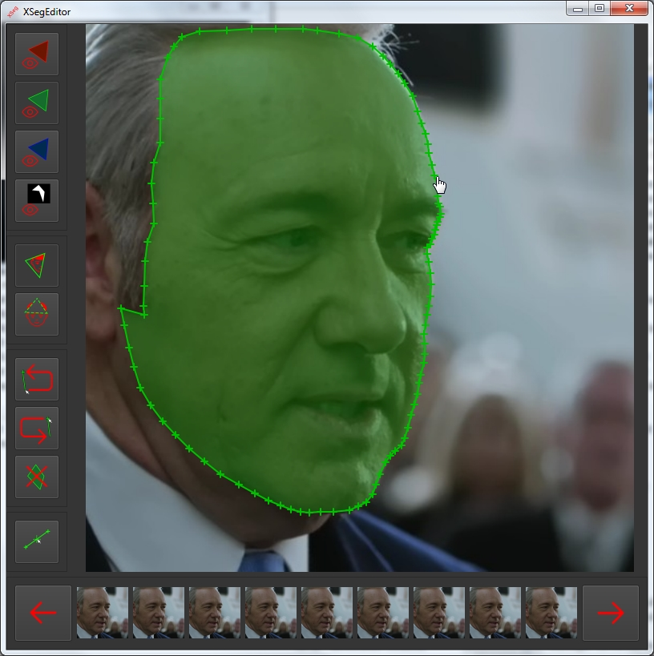
Trainer
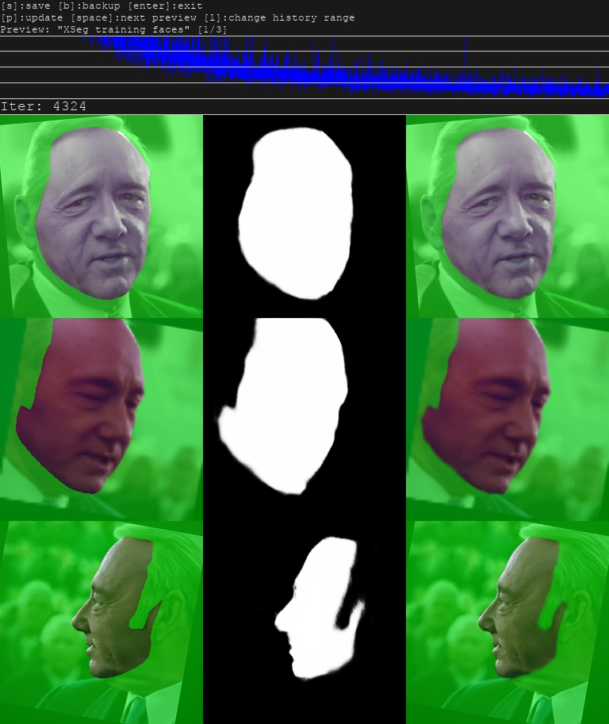
6. Training:
There are currently 2 models to choose from for training:
SAEHD (6GB+): High Definition Styled Auto Encoder - for high end GPUs with at least 6GB of VRAM.
Features/settings available:
- runs at any resolution in increments of 16 (32 for -UD and -D variants) up to 640x640 pixels
- half face, mid-half face, full face, whole face and head face type
- 8 architectures: DF, LIAE, each in 4 variants - regular, -U, -D and -UD
- Adjustable Batch Size
- Adjustable Model Auto Encoder, Encoder, Decoder and Mask Decoder Dimensions
- Auto Backup feature
- Preview History
- Adjustable Target Iteration
- Random Flip (yaw)
- Uniform Yaw
- Eye Priority
- Masked Training
- GPU Optimizer
- Learning Dropout
- Random Warp
- GAN Training Power
- True Face Training Power
- Face and Background Style Power
- Color Transfer modes
- Gradient Clipping
- Pretrain Mode
Quick96 (2-4GB): Simple model derived from SAE model - dedicated for low end GPUs with 2-4GB of VRAM.
Features:
- 96x96 Pixels resolution
- Full Face
- Batch size 4
- DF-UD architecture
Both models can generate good deepfakes but obviously SAEHD is the preferred and more powerful one. Quick96 is recommended for low end cards or dataset testing
If you want to see what other people can achieve with various graphics cards, check this spreadsheet out where users can share their model settings:
https://mrdeepfakes.com/forums/thread-dfl-2-0-user-model-settings-spreadsheet
After you've checked other peoples settings and decided on a model you want to use you start it up using either one of those:
6) train SAEHD
6) train Quick96
Since Quick96 is not adjustable you will see the command window pop up and ask only 1 question - CPU or GPU (if you have more then it will let you choose either one of them or train with both).
SAEHD however will present you with more options to adjust.
In both cases first a command line window will appear where you input your model settings. On a first start will you will have access to all setting that are explained below, on startup of training with a model already trained and present in the "model" folder you will also receive a prompt where you can choose which model to train on (if you have more than one set of model files present in your "model" folder).
You will also always get a prompt to select which GPU or CPU you want to run the trainer on.
Second thing you will see once you startup is the preview window that looks like this:
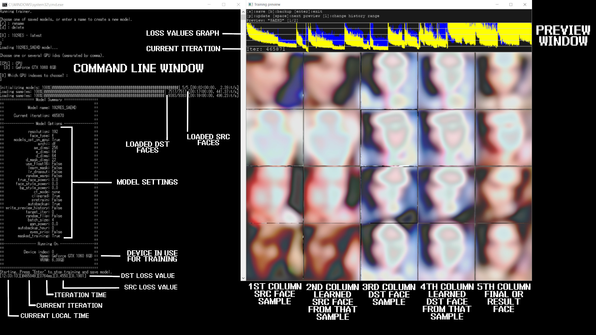
Here is a more detailed explanation of all functions in order they are presented to the user upon starting training of a new model:
Note that some of these get locked and can't be changed once you start training due to way these models work, example of things that can't be changed later are:
You will also always get a prompt to select which GPU or CPU you want to run the trainer on.
Second thing you will see once you startup is the preview window that looks like this:
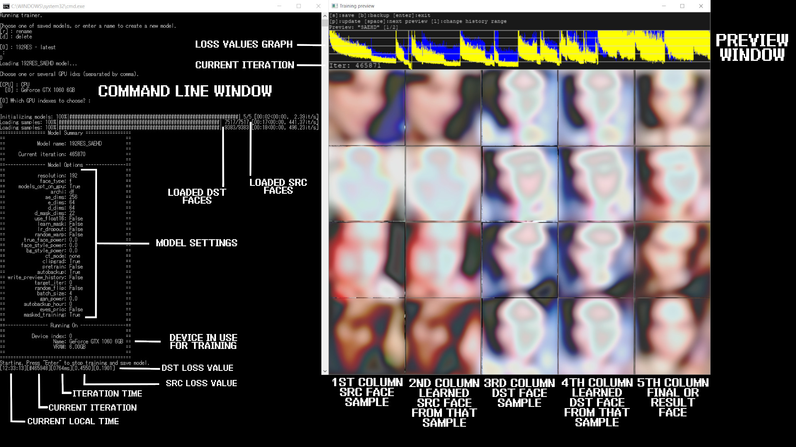
Here is a more detailed explanation of all functions in order they are presented to the user upon starting training of a new model:
Note that some of these get locked and can't be changed once you start training due to way these models work, example of things that can't be changed later are:
- model resolution
- model architecture
- models dimensions (dims settings)
- face type
- model architecture
- models dimensions (dims settings)
- face type
Autobackup every N hour ( 0..24 ?:help ) : self explanatory - let's you enable automatic backups of your model every N hours. Leaving it at 0 (default) will disable auto backups. Default value is 0 (disabled).
Target iteration : will stop training after certain amount of iterations is reached, for example if you want to train you model to only 100.000 iterations you should enter a value of 100000. Leaving it at 0 will make it run until you stop it manually. Default value is 0 (disabled).
Flip faces randomly ( y/n ?:help ) : Useful option in cases where you don't have all necessary angles of the persons face (source dataset) that you want to swap onto the target. For example if you have a target/destination video with person looking straight and to the right and your source only has faces looking straight and to the left you should enable this feature but bear in mind that because no face is symmetrical results may look less like src and also features on the source face (like beauty marks, scars, moles, etc.) will be mirrored. Default value is n (disabled).
Batch_size ( ?:help ) : Batch size settings affects how many faces are being compared to each other every each iteration. Lowest value is 2 and you can go as high as your GPU will allow which is affected by VRAM. The higher your models resolution, dimensions and the more features you enable the more VRAM will be needed so lower batch size might be required. It's recommended to not use value below 4. Higher batch size will provide better quality at the cost of slower training (higher iteration time). For the intiall stage it can be set lower value to speed up initial training and then raised higher. Optimal values are between 6-12. How to guess what batch size to use? You can either use trial and error or help yourself by taking a look at what other people can achieve on their GPUs by checking out the DFL 2.0 spreadsheet: [url=https://mrdeepfakes.com/forums/thread-dfl-2-0-user-model-settings-spreadsheet]https://mrdeepfakes.com/forums/thread-dfl-2-0-user-model-settings-spreadsheet
Resolution ( 64-640 ?:help ) : here you set your models resolution, bear in mind this option cannot be changed during training. It affects the resolution of swapped faces, the higher model resolution - the more detailed the learned face will be but also training will be much heavier and longer. Resolution can be increased from 64x64 to 640x640 by increments of:
16 (for regular and -U architectures variants)
32 (for -D and -UD architectures variants)
16 (for regular and -U architectures variants)
32 (for -D and -UD architectures variants)
Higher resolutions might require increasing of the model dimensions (dims).
Face type ( h/mf/f/wf/head ?:help ) : this option let's you set the area of the face you want to train, there are 5 options - half face, mid-half face, full face, whole face and head:
a) Half face - only trains from mouth to eybrows but can in some cases cut of top or bottom of the face (eyebrows, chin, bit of mouth).
b) Mid-half face - aims to fix this issue by covering 30% larger portion of face compared to half face which should prevent most of the undesirable cut offs from occurring but they can still happen.
c) Full face - covers most of the face area, excluding forehead, can sometimes cut off a little bit of chin but this happens very rarely - most recommended when SRC and/or DST have hair covering forehead.
d) Whole face - expands that area even more to cover pretty much the whole face, including forehead and even a little bit of hair but this mode should be used when we want to make a swap of the entire face, excluding hair. Additional option for this face type is masked_training that let's you prioritize learning full face area of face first and then (after disabling) letting the model learn the rest of the face like forehead.
e) Head - is used to do a swap of the entire head, not suitable for subjects with long hair, works best if the source faceset/dataset comes from single source and both SRC and DST have short hair or one that doesn't change shape depending on the angle. Minimum recommended resolution for this face type is 224.
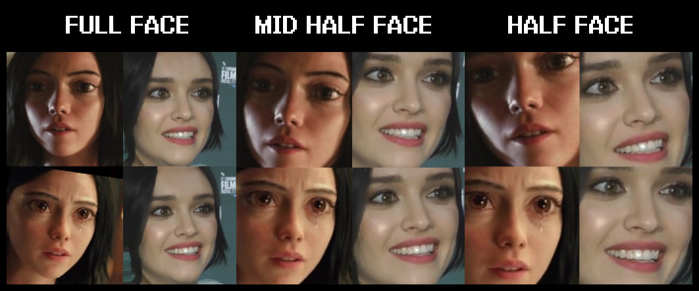
Example of whole face type face swap:
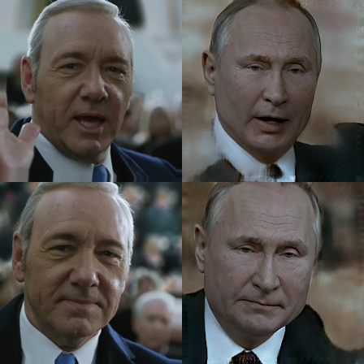
AE architecture (df/liae/df-u/liae-u/df-d/liae-d/df-ud/liae-ud ?:help ) : This option let's you choose between 2 main learning architectures DF and LIAE as well as their -U, -D and -UD versions.
DF and LIAE architectures are the base ones, both offering good quality with decent performance.
DF-U, DF-UD, LIAE-U and LIAE- UD are additional architecture variants.
DF: This model architecture provides a more direct face swap, doesn't morph faces but requires that the source and target/destination face/head have similar face shape.
This model works best on frontal shots and requires that your source dataset has all the required angles, can produce worse results on side profiles.
LIAE: This model architecture isn't as strict when it comes to face/head shape similarity between source and target/destination but this model does morph the faces so it's recommended to have actual face features (eyes, nose, mouth, overall face structure) similar between source and target/destination. This model offers worse resemblance to source on frontal shots but can handle side profiles much better and is more forgiving when it comes to source faceset/dataset, often producing more refined face swaps with better color/lighting match.
-U: this variant aims to improve similarity/likeness of trained result face to SRC dataset.
-D: this variant aims to improve performance, it let's you train your model at twice the resolution with no extra compute cost (VRAM usage) and similar performance, for example train 256 resolution model at the same VRAM usage and speed (iteration time) as 128 resolution model. However it requires longer training, model must be pretrained first for optimal results and resolution must be changed by the value of 32 as opposed to 16 in other variants.
[b]-UD: [/b]combines both variants for maximum likeness and increased resolution/performance. Also requires longer training and model to be pretrained.
[b]-UD: [/b]combines both variants for maximum likeness and increased resolution/performance. Also requires longer training and model to be pretrained.
The next 4 options control models neural network dimensions which affect models ability to learn, modifying these can have big impact on performance and quality of the learned faces so they should be left at default.
AutoEncoder dimensions ( 32-1024 ?:help ) : Auto encoder dimensions settings, affects overall ability of the model to learn faces.
Encoder dimensions ( 16-256 ?:help ) : Encoder dimensions settings, affects ability of the model to learn general structure of the faces.
Decoder dimensions ( 16-256 ?:help ) : Decoder dimensions settings, affects ability of the model to learn fine detail.
Decoder mask dimensions ( 16-256 ?:help ) : Mask decoder dimensions settings, affects quality of the learned masks. May or may not affect some other aspects of training.
Since now learned mask is enabled always by default and can't be changed one may consider dropping this setting down to lower value to get better performance but detailed tests would have to be done to determine effects on quality of masks, learned faces and performance to determine if it's worth to change is from default value.
The changes in performance when changing each setting can have varying effects on performance and it's not possible to measure effect of each one on performance and quality without extensive training. Each one is set at certain default value that should offer optimal results and good compromise between training speed and quality.
Also when changing one parameter the other ones should be changed as well to keep the relations between them similar (for example if you drop Encoder and Decoder dimensions from 64 to 48 you could also decrease AutoEncoder dimension from 256 to 192-240). Feel free to experiment with various settings.
If you want optimal results, keep them at default or increase them slightly for higher resolution models.
Eyes priority ( y/n ?:help ) : Attempts to fix problems with eye training by forcing the neural network to train eyes with higher priority.
Bear in mind that it does not guarantee the right eye direction, it only affects the details of the eyes and area around them. Example (before and after):
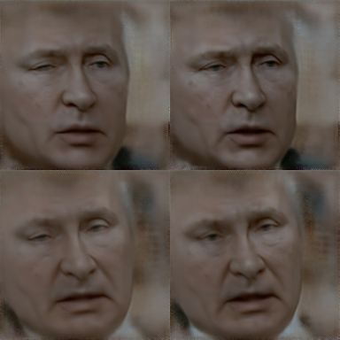
Place models and optimizer on GPU ( y/n ?:help ) : Enabling GPU optimizer puts all the load on your GPU which greatly improves performance (iteration time) but will lead to higher VRAM usage, disabling this feature will offload some work of the optimizer to CPU which decreases load on GPU and VRAM usage thus letting you achieve higher batch size or run more demanding models at the cost of longer iteration times. If you get OOM (out of memory) error and you don't want to lower your batch size or disable some feature you should disable this feature and thus some work will be offloaded to your CPU and some data from GPUs VRAM to system RAM - you will be able to run your model without OOM errors at the cost of lower speed. Default value is y (enabled).
Use learning rate dropout ( y/n/cpu ?:help ) : LRD is designed to aid in training by changing learning rate dropout when enabled and thus accelerating training of faces (lower loss) and also reducing sub-pixel shake. LRD must be enabled before running GAN. This option affects VRAM usage so if you run into OOM errors you can run it on CPU which will decrease VRAM usage and let you train at the same batch size but iteration time will slowed down by about 20%.
Bear in mind that it does not guarantee the right eye direction, it only affects the details of the eyes and area around them. Example (before and after):
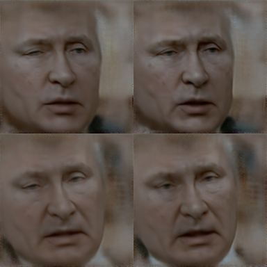
Place models and optimizer on GPU ( y/n ?:help ) : Enabling GPU optimizer puts all the load on your GPU which greatly improves performance (iteration time) but will lead to higher VRAM usage, disabling this feature will offload some work of the optimizer to CPU which decreases load on GPU and VRAM usage thus letting you achieve higher batch size or run more demanding models at the cost of longer iteration times. If you get OOM (out of memory) error and you don't want to lower your batch size or disable some feature you should disable this feature and thus some work will be offloaded to your CPU and some data from GPUs VRAM to system RAM - you will be able to run your model without OOM errors at the cost of lower speed. Default value is y (enabled).
Use learning rate dropout ( y/n/cpu ?:help ) : LRD is designed to aid in training by changing learning rate dropout when enabled and thus accelerating training of faces (lower loss) and also reducing sub-pixel shake. LRD must be enabled before running GAN. This option affects VRAM usage so if you run into OOM errors you can run it on CPU which will decrease VRAM usage and let you train at the same batch size but iteration time will slowed down by about 20%.
Enable random warp of samples ( y/n ?:help ) : Random warp is used to generalize a model so that it correctly learns all the basic shapes, face features, structure of the face, expressions and so on but as long as it's enabled the model may have trouble learning the fine detail - because of it it's recommended to keep this feature enabled as long as your faces are still improving (by looking at decreasing loss values and preview window), once the face are trained fully and you want to get some more detail you should disable it and in few thousand iterations you should start to see more detail and with this feature disabled you carry on with training. Default value is y (enabled).
Uniform_yaw ( y/n ?:help ) : Helps with training of profile faces, forces model to train evenly on all faces depending on their yaw and prioritizes profile faces, may cause frontal faces to train slower, enabled by default during pretraining, can be used similarly to random warp (at the beginning of the training process) or enabled after RW is disabled when faces are more or less trained and you want profile faces to look better and less blurry. Useful when your source dataset doesn't have many profile shots. Can help lower loss values. Default value is n (disabled).
GAN power ( 0.0 .. 10.0 ?:help ) : GAN stands for Generative Adversarial Network and in case of DFL 2.0 it is implemented as an additional way of training to get more detailed/sharp faces. This option is adjustable on a scale from 0.0 to 10.0 and it should only be enabled once the model is more or less done training (after you've disabled random warp of samples and enabled LRD). It's recommended to start at low value of 0.1 which is also a recommended value in most cases, once it's enabled you should not disable it, make sure to make backups of your models in case you don't like the results.
Default value is 0.0 (disabled).
GAN power ( 0.0 .. 10.0 ?:help ) : GAN stands for Generative Adversarial Network and in case of DFL 2.0 it is implemented as an additional way of training to get more detailed/sharp faces. This option is adjustable on a scale from 0.0 to 10.0 and it should only be enabled once the model is more or less done training (after you've disabled random warp of samples and enabled LRD). It's recommended to start at low value of 0.1 which is also a recommended value in most cases, once it's enabled you should not disable it, make sure to make backups of your models in case you don't like the results.
Default value is 0.0 (disabled).
Before/after example of a face trained with GAN at value of 0.1 for 40k iterations:
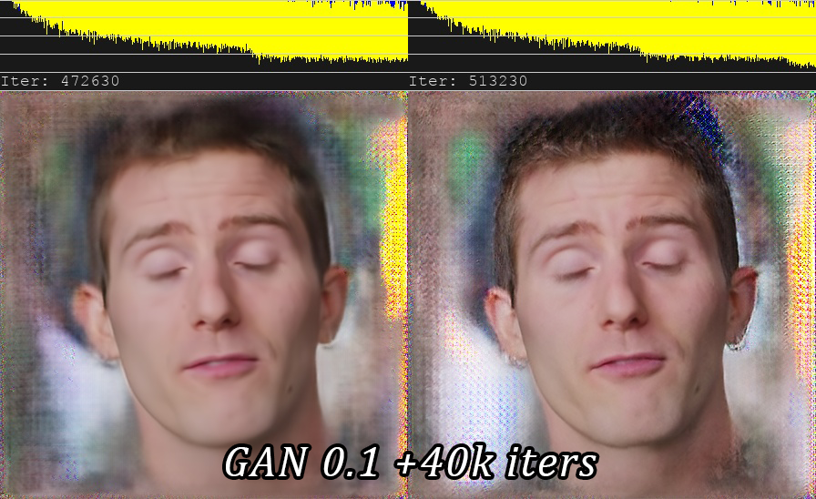
'True face' power. ( 0.0000 .. 1.0 ?:help ) : True face training with a variable power settings let's you set the model discriminator to higher or lower value, what this does is it tries to make the final face look more like src, as with GAN this feature should only be enabled once random warp is disabled and model is fairly well trained. Consider making a backup before enabling this feature. Never use high values, typical value is 0.01 but you can use even lower ones like 0.001. The higher the setting the more result face will look like faces in source dataset which may cause issues with color match and also cause artifacts to show up so it's important to not use high values. It has a small performance impact which may cause OOM error to occur. Default value is 0.0 (disabled).
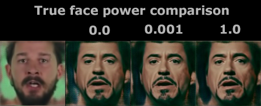
Face style power ( 0.0..100.0 ?:help ) and Background style power ( 0.0..100.0 ?:help ) : This setting controls style transfer of either face or background part of the image, it is used to transfer the style of your target/destination faces (data_dst) over to the final learned face which can improve quality and look of the final result after merging but high values can cause learned face to look more like data_dst than data_src. It will transfer some color/lighting information from DST to result face. It's recommended to not use values higher than 10. Start with small values like 0.001-0.01. This feature has big performance impact and using it will increase iteration time and may require you to lower your batch size, disable gpu optimizer or run LRD on CPU. Consider making a backup before enabling this feature. Default value is 0.0 (disabled).
Color transfer for src faceset ( none/rct/lct/mkl/idt/sot ?:help ) : this features is used to match the colors of your data_src to the data_dst so that the final result has similar skin color/tone to the data_dst and the final result after training doesn't change colors when face moves around (which may happen if various face angles were taken from various sources that contained different light conditions or were color graded differently). There are several options to choose from:
- rct (reinhard color transfer): based on: https://www.cs.tau.ac.il/~turkel/imagepa...ansfer.pdf
- lct (linear color transfer): Matches the color distribution of the target image to that of the source image using a linear transform.
- mkl (Monge-Kantorovitch linear): based on: http://www.mee.tcd.ie/~sigmedia/pmwiki/u...tie07b.pdf
- idt (Iterative Distribution Transfer): based on: http://citeseerx.ist.psu.edu/viewdoc/dow...1&type=pdf
- sot (sliced optimal transfer): based on: https://dcoeurjo.github.io/OTColorTransfer/
Enable gradient clipping ( y/n ?:help ) : This feature is implemented to prevent so called model collapse/corruption which may occur when using various features of DFL 2.0. It has small performance impact so if you really don't want to use it you must enable auto backups as a collapsed model cannot recover and must be scraped and training must be started all over. Default value is n (disabled) but since the performance impact is so low and it can save you a lot of time by preventing model collapse if you leave it enabled. Model collapse is most likely to happen when using Style Powers so if you're using them it's highly advised to enable gradient clipping or backups (you can also do them manually).
Enable pretraining mode ( y/n ?:help ) : Enables pretraining process that uses a dataset of random peoples faces to initially train your model, after training it to around 200k-400k iterations such model can be then used when starting training with actual data_src and data_dst you want to train, it saves time because you don't have to start training all over from 0 every time (the model will "know" how faces should look like and thus speed up the initial training stage). The pretrain option can be enabled at any time but it's recommended to pretrain a model only once at the start. You can also pretrain with your own custom faceset, all you need to do is create one (can be either data_src or data_dst) and then use 4.2) data_src (or dst) util faceset pack .bat file to pack into into one file, then rename it to faceset.pak and replace (backup old one) the file inside the "...\_internal\pretrain_CelebA" folder. Default value is n (disabled). However if you want to save some time you can use one of the shared pretrained models in this thread.
Shared models: https://mrdeepfakes.com/forums/thread-df...d-requests
To use shared pretrained model simply download it, put all the files directly into your model folder, start training, press any key within 2 seconds after selecting model for training (if you have more than on in the model folder) and device to train with (GPU/CPU) to override model settings and make sure the pretrain option is disabled so that you start proper training, if you leave pretrain options enabled the model will carry on with pretraining. Note that the model will revert iteration count to 0, that's normal behavior for a pretrained model.
Optionally instead of pretraining you can just train a model on random faces placed in your data_src and data_dst but this method can cause morphing to previously trained data when you start regular training which might cause result face to look less src like. This is the same behavior that might occur when you reuse an already trained model on new SRC and DST datasets.
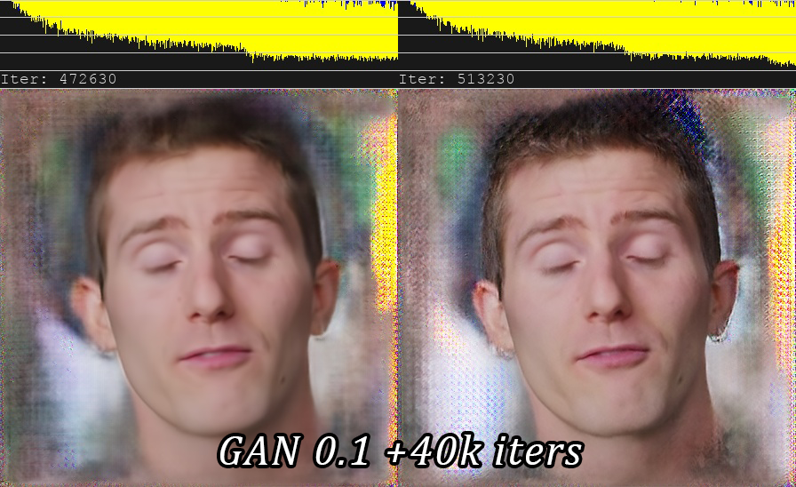
'True face' power. ( 0.0000 .. 1.0 ?:help ) : True face training with a variable power settings let's you set the model discriminator to higher or lower value, what this does is it tries to make the final face look more like src, as with GAN this feature should only be enabled once random warp is disabled and model is fairly well trained. Consider making a backup before enabling this feature. Never use high values, typical value is 0.01 but you can use even lower ones like 0.001. The higher the setting the more result face will look like faces in source dataset which may cause issues with color match and also cause artifacts to show up so it's important to not use high values. It has a small performance impact which may cause OOM error to occur. Default value is 0.0 (disabled).
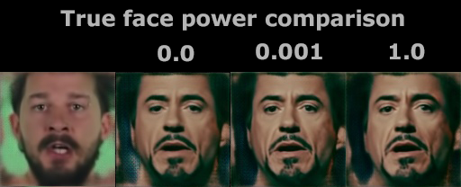
Face style power ( 0.0..100.0 ?:help ) and Background style power ( 0.0..100.0 ?:help ) : This setting controls style transfer of either face or background part of the image, it is used to transfer the style of your target/destination faces (data_dst) over to the final learned face which can improve quality and look of the final result after merging but high values can cause learned face to look more like data_dst than data_src. It will transfer some color/lighting information from DST to result face. It's recommended to not use values higher than 10. Start with small values like 0.001-0.01. This feature has big performance impact and using it will increase iteration time and may require you to lower your batch size, disable gpu optimizer or run LRD on CPU. Consider making a backup before enabling this feature. Default value is 0.0 (disabled).
Color transfer for src faceset ( none/rct/lct/mkl/idt/sot ?:help ) : this features is used to match the colors of your data_src to the data_dst so that the final result has similar skin color/tone to the data_dst and the final result after training doesn't change colors when face moves around (which may happen if various face angles were taken from various sources that contained different light conditions or were color graded differently). There are several options to choose from:
- rct (reinhard color transfer): based on: https://www.cs.tau.ac.il/~turkel/imagepa...ansfer.pdf
- lct (linear color transfer): Matches the color distribution of the target image to that of the source image using a linear transform.
- mkl (Monge-Kantorovitch linear): based on: http://www.mee.tcd.ie/~sigmedia/pmwiki/u...tie07b.pdf
- idt (Iterative Distribution Transfer): based on: http://citeseerx.ist.psu.edu/viewdoc/dow...1&type=pdf
- sot (sliced optimal transfer): based on: https://dcoeurjo.github.io/OTColorTransfer/
Enable gradient clipping ( y/n ?:help ) : This feature is implemented to prevent so called model collapse/corruption which may occur when using various features of DFL 2.0. It has small performance impact so if you really don't want to use it you must enable auto backups as a collapsed model cannot recover and must be scraped and training must be started all over. Default value is n (disabled) but since the performance impact is so low and it can save you a lot of time by preventing model collapse if you leave it enabled. Model collapse is most likely to happen when using Style Powers so if you're using them it's highly advised to enable gradient clipping or backups (you can also do them manually).
Enable pretraining mode ( y/n ?:help ) : Enables pretraining process that uses a dataset of random peoples faces to initially train your model, after training it to around 200k-400k iterations such model can be then used when starting training with actual data_src and data_dst you want to train, it saves time because you don't have to start training all over from 0 every time (the model will "know" how faces should look like and thus speed up the initial training stage). The pretrain option can be enabled at any time but it's recommended to pretrain a model only once at the start. You can also pretrain with your own custom faceset, all you need to do is create one (can be either data_src or data_dst) and then use 4.2) data_src (or dst) util faceset pack .bat file to pack into into one file, then rename it to faceset.pak and replace (backup old one) the file inside the "...\_internal\pretrain_CelebA" folder. Default value is n (disabled). However if you want to save some time you can use one of the shared pretrained models in this thread.
Shared models: https://mrdeepfakes.com/forums/thread-df...d-requests
To use shared pretrained model simply download it, put all the files directly into your model folder, start training, press any key within 2 seconds after selecting model for training (if you have more than on in the model folder) and device to train with (GPU/CPU) to override model settings and make sure the pretrain option is disabled so that you start proper training, if you leave pretrain options enabled the model will carry on with pretraining. Note that the model will revert iteration count to 0, that's normal behavior for a pretrained model.
Optionally instead of pretraining you can just train a model on random faces placed in your data_src and data_dst but this method can cause morphing to previously trained data when you start regular training which might cause result face to look less src like. This is the same behavior that might occur when you reuse an already trained model on new SRC and DST datasets.
6.1. Training workflow.
See the 3rd post for workflow.
7. Merging:
After you're done training your model it's time to merge learned face over original frames to form final video (convert).
For that we have 2 converters corresponding to 2 available models:
7) merge SAEHD
7) merge Quick96
Upon selecting any of those a command line window will appear with several prompts.
1st one will ask you if you want to use an interactive converter, default value is y (enabled) and it's recommended to use it over the regular one because it has all the features and also an interactive preview where you see the effects of all changes you make when changing various options and enabling/disabling various features
Use interactive merger? ( y/n ) :
2nd one will ask you which model you want to use:
Choose one of saved models, or enter a name to create a new model.
[r] : rename
[d] : delete
[0] : df192 - latest
:
3rd one will ask you which GPU/GPUs or CPU you want to use for the merging (conversion) process:
Choose one or several GPU idxs (separated by comma).
[CPU] : CPU
[0] : GeForce GTX 1060 6GB
[0] Which GPU indexes to choose? :
Pressing enter will use default value (0).
After that's done you will see a command line window with current settings as well as preview window which shows all the controls needed to operate the interactive converter/merger.
Here is a quick look at both the command line window and converter preview window:
![[Image: BT6vAzW.png]](./src/BT6vAzW.png)
Converter features many options that you can use to change the mask type, it's size, feathering/blur, you can add additional color transfer and sharpen/enhance final trained face even further.
Here is the list of all merger/converter features explained:
1. Main overlay modes:
- original: displays original frame without swapped face
- overlay: simple overlays learned face over the frame
- hist-match: overlays the learned face and tires to match it based on histogram (has 2 modes: normal and masked that can be switched with Z)
- seamless: uses opencv poisson seamless clone function to blend new learned face over the head in the original frame
- seamless hist match: combines both hist-match and seamless.
- raw-rgb: overlays raw learned face without any masking
NOTE: Seamless modes can cause flickering.
2. Hist match threshold: controls strength of the histogram matching in hist-match and seamless hist-match overlay mode.
Q - increases value
A - decreases value
3. Erode mask: controls the size of a mask.
W - increases mask erosion (smaller mask)
S - decreases mask erosion (bigger mask)
4. Blur mask: blurs/feathers the edge of the mask for smoother transition
E - increases blur
D - decreases blur
5. Motion blur: upon entering initial parameters (interactive converter, model, GPU/CPU) merger/converter loads all frames and data_dst aligned data, while it's doing it, it calculates motion vectors that are being used to create effect of motion blur which this setting controls, it let's you add it in places where face moves around but high values may blur the face even with small movement. The option only works if on set of faces is present in the "data_dst/aligned" folder - if during cleanup you had some faces with _1 prefixes (even if only faces of one person are present) the effect won't work, same goes if there is a mirror that reflects target persons face, in such case you cannot use motion blur and the only way to add it is to train each set of faces separately.
R - increases motion blur
F - decreases motion blur
6. Super resolution: uses similar algorithm as data_src dataset/faceset enhancer, it can add some more definitions to areas such as teeth, eyes and enhance detail/texture of the learned face.
T - increases the enhancement effect
G - decreases the enhancement effect
7. Blur/sharpen: blurs or sharpens the learned face using box or gaussian method.
Y - sharpens the face
H - blurs the face
N - box/gaussian mode switch
8. Face scale: scales learned face to be larger or smaller.
U - scales learned face down
J - scales learned face up
9. Mask modes: there are 6 masking modes:
dst: uses masks derived from the shape of the landmarks generated during data_dst faceset/dataset extraction.
learned-prd: uses masks learned during training. Keep shape of source faces.
learned-dst: uses masks learned during training. Keep shape of source faces.
learned-prd*dst: combines both masks, smaller size of both.
learned-prd+dst: combines both masks, bigger size of both.
XSeg-prd: uses trained XSeg model to mask using data from source faces.
XSeg-dst: uses trained XSeg model to mask using data from destination faces.
XSeg-prd*dst: combines both masks, smaller size of both.
learned-prd*dst*XSeg-dst*prd: combines all 4 mask modes, smaller size of all.
You can also mask it manually in post:
https://mrdeepfakes.com/forums/thread-gu...er-effects
10. Color transfer modes: similar to color transfer during training, you can use this feature to better match skin color of the learned face to the original frame for more seamless and realistic face swap. There are 8 different modes:
RCT
LCT
MKL
MKL-M
IDT
IDT-M
SOT - M
MIX-M
11. Image degrade modes: there are 3 settings that you can use to affect the look of the original frame (without affecting the swapped face):
Denoise - denoises image making it slightly blurry (I - increases effect, K - decrease effect)
Bicubic - blurs the image using bicubic method (O - increases effect, L - decrease effect)
Color - decreases color bit depth (P - increases effect, ; - decrease effect)
Additional controls:
TAB button - switch between main preview window and help screen.
Bear in mind you can only change parameters in the main preview window, pressing any other buttons on the help screen won't change them.
-/_ and =/+ buttons are used to scale the preview window.
Use caps lock to change the increment from 1 to 10 (affects all numerical values).
To save/override settings for all next frames from current one press shift + / key.
To save/override settings for all previous frames from current one press shift + M key.
To start merging of all frames press shift + > key.
To go back to the 1st frame press shift + < key.
To only convert next frame press > key.
To go back 1 frame press < key.
After you merged/convert all the faces and you will have a folder named "merged" inside your "data_dst" folder containing all frames that makeup the video.
Last step is to convert them back into video and combine with original audio track from data_dst.mp4 file.
To do so you will use one of 4 provided .bat files that will use FFMPEG to combine all the frames into a video in one of the following formats - avi, mp4, loseless mp4 or loseless mov:
- 8) merged to avi
- 8) merged to mov lossless
- 8) merged to mp4 lossless
- 8) merged to mp4
XSeg-prd: uses trained XSeg model to mask using data from source faces.
XSeg-dst: uses trained XSeg model to mask using data from destination faces.
XSeg-prd*dst: combines both masks, smaller size of both.
learned-prd*dst*XSeg-dst*prd: combines all 4 mask modes, smaller size of all.
You can also mask it manually in post:
https://mrdeepfakes.com/forums/thread-gu...er-effects
10. Color transfer modes: similar to color transfer during training, you can use this feature to better match skin color of the learned face to the original frame for more seamless and realistic face swap. There are 8 different modes:
RCT
LCT
MKL
MKL-M
IDT
IDT-M
SOT - M
MIX-M
11. Image degrade modes: there are 3 settings that you can use to affect the look of the original frame (without affecting the swapped face):
Denoise - denoises image making it slightly blurry (I - increases effect, K - decrease effect)
Bicubic - blurs the image using bicubic method (O - increases effect, L - decrease effect)
Color - decreases color bit depth (P - increases effect, ; - decrease effect)
Additional controls:
TAB button - switch between main preview window and help screen.
Bear in mind you can only change parameters in the main preview window, pressing any other buttons on the help screen won't change them.
-/_ and =/+ buttons are used to scale the preview window.
Use caps lock to change the increment from 1 to 10 (affects all numerical values).
To save/override settings for all next frames from current one press shift + / key.
To save/override settings for all previous frames from current one press shift + M key.
To start merging of all frames press shift + > key.
To go back to the 1st frame press shift + < key.
To only convert next frame press > key.
To go back 1 frame press < key.
8. Conversion of frames back into video:
After you merged/convert all the faces and you will have a folder named "merged" inside your "data_dst" folder containing all frames that makeup the video.
Last step is to convert them back into video and combine with original audio track from data_dst.mp4 file.
To do so you will use one of 4 provided .bat files that will use FFMPEG to combine all the frames into a video in one of the following formats - avi, mp4, loseless mp4 or loseless mov:
- 8) merged to avi
- 8) merged to mov lossless
- 8) merged to mp4 lossless
- 8) merged to mp4
And that's it! After you've done all these steps you should have a file called result.xxx (avi/mp4/mov) which is your deepfake video.
![[-]](./[SFW] [GUIDE] - DeepFaceLab 2.0 EXPLAINED AND TUTORIALS (recommended) (8)_files/collapse.png)
.gif)